Fundamentals of
Data Analytics and
Predictions
Neural Networks and Deep Learning
Xi (Rossi) LUO
Department of Biostatistics and Data Science
School of Public Health
The University of Texas Health Science Center at Houston
What is a Neural Network?
- Example: Housing Price Prediction
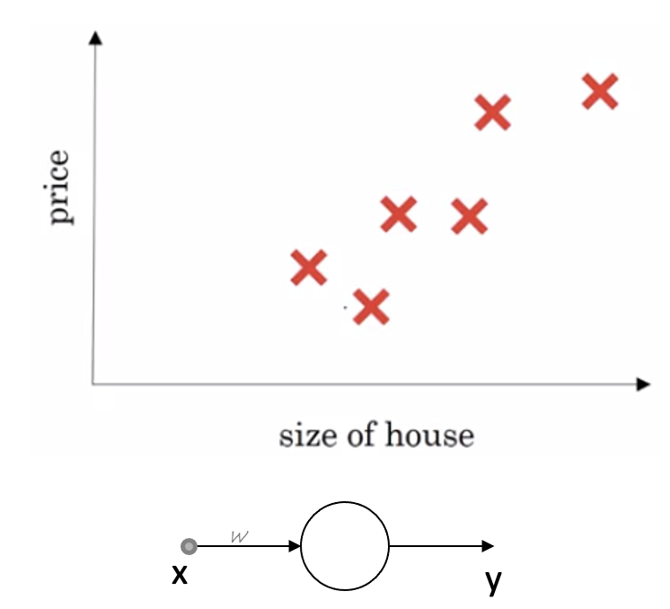
Example: Housing Price Prediction
- More features: size, #bedrooms, zipcode, wealth
- Predict price
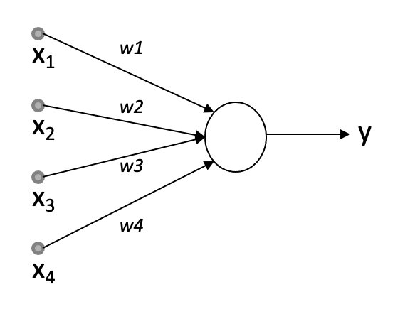
Housing Price Prediction—2
Supervised Learning with Neural Networks
Types of Neural Networks
More recently, transformers
Why is Deep Learning Taking Off?
- Scale drives deep learning progress
- Data, computation, algorithms
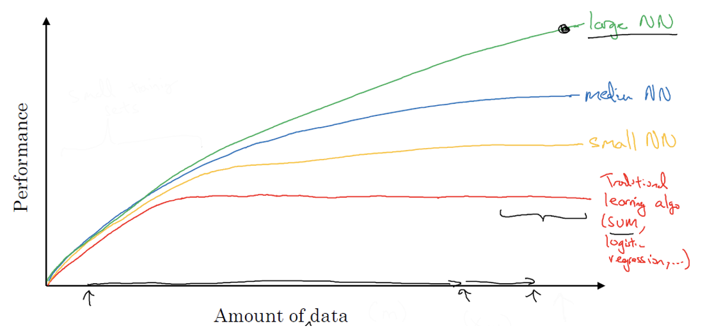
Non-Linear [Big] Problems
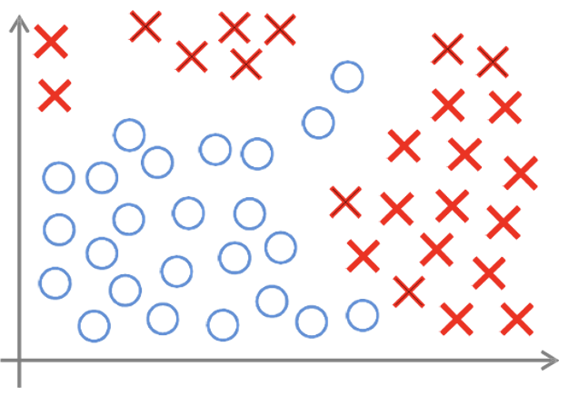
- Classification/Regression
- Large number of features ($x_1, x_2, x_3, \dots, x_{1000}, \dots, x_{10000}$)
- Large number of observations (big datasets)
Camera's Point of View
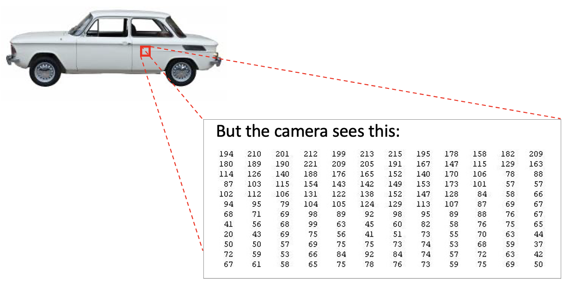
Artificial Neural Network
Neural Networks Representation
- Neurons and the brain
- Origins: Algorithms that try to mimic the brain
- Human brain; highly complex nonlinear and massively parallel network of neurons
- Artificial Neural Network (ANN) is a simplified model of the brain
- A function approximator that transforms inputs into outputs to the best of its ability
- ANNs are used for problems of classification, for example pattern recognition and image matching
- ANNs are also used for regression problems
Artificial Neural Networks (ANN) -1
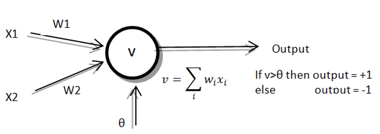
- The first artificial neuron model was introduced by McCulloch and Pitts in 1943
- Input/output signals can be +1 or -1
- The neuron calculates the weighted sum of inputs and compares it to a threshold
- If sum is greater than threshold, then the output is +1 else the output is -1
Anatomy of a Neuron
- This simple neuron model consists of:
- A set of connections called synapses, which make the links to other neurons to create a
network
- Each synapse has a weight which represents the strength of that connection
- One unity which multiplies each incoming activity by the weight on the connection and adds
together all these weighted inputs to get a total input
- An activation function that transforms the total into an outgoing activity
Artificial Neural Networks (ANN) -2
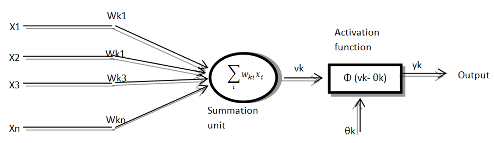
- ANN is a generalization of the simple neuron model with more inputs and a more complicated
activation function
Artificial Neural Networks (ANN) -3
- The weights in a neural network are the most important factor in determining its function
- Training is the act of presenting the network with some sample data and modifying the weights to
better approximate the desired function
- We feed the NN with inputs and their corresponding desired output
- The learning algorithm modifies the weights to adapt the obtained output according to the
desired output
Activation Functions
- The activation function is a decision function, applied to the weighted sum of the inputs of a
neuron to produce the output
- Activation functions:
- Threshold function
- Piecewise-linear function
- Sigmoid/Logistic: $\frac{1}{(1+e^{-x})}$
- Tanh: $\frac{e^x-e^{-x}}{e^x+e^{-x}}$
- Relu: $\max(0,x)$
ANN Architecture: Single Layer Perceptron
- The network is formed by an assembly of many neurons
- Single-layer perceptron
- Input neurons typically have two states: ON and OFF
- Output neurons use a simple threshold activation function
- Used to solve linear problems
ANN Architecture: Single Layer Perceptron Example
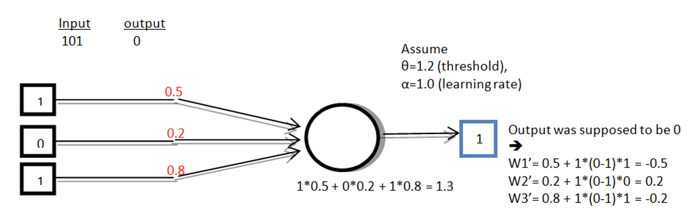
- If the output is not correct, the weights are adjusted according to the formula:
$w_{new}=w_{old}+\alpha (desired-output)*input$
ANN Architecture: Multiple Layer Perceptron
- MLP is a generalization of single perceptron with multiple layers. Used for non-linear separable
functions
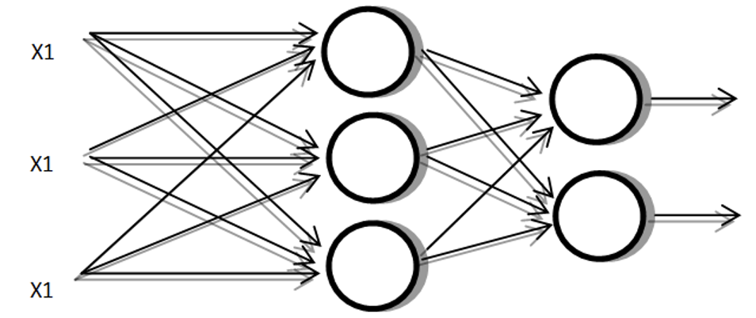
ANN Architecture: Feed Forward
- Multiple feed-forward networks is the most common MLP types where activation function is usually
a sigmoid function
- Information flows in one direction
- The outputs of one layer act as inputs to the next layer (hence the name feed-forward)
- Represented with a directed acyclic graph, in which every neuron of the $i^{th}$ layer is
connected (only) to the neurons of the $(i+1)^{th}$ layer
Neural Net Training —1
- We feed the network with input and the desired output
- The connection weights are parameters to be estimated, so the learning algorithm modifies the
weights iteratively
- The error back-propagation algorithm is the most commonly used algorithm in
NN training, it consists of two phases:
- The forward phase where activations are propagated from input to output layer
- The backward phase, where the error between the observed and the requested value in the
output layer is propagated backwards in order to modify the weights
- The gradient descent is the most known supervised learning algorithm to
estimate weights/coefficients
Neural Net Training —2
- Training with back propagation is usually implemented by repeating the steps for all the
examples in the training set
- The examples are resubmitted iteratively, until a stop condition is reached. (Simple stop
conditions can be a threshold to the error on the training set, or to the number of
iterations
- The number of hidden neurons (in hidden layers) is an important parameter when designing an MLP
- There is no general rule which tells us the best dimension for the hidden layer
- The ideal number of hidden neurons depends on the complexity of the function
- A small number of hidden neurons are good for simple problems while more neurons are
better for complex problems
Neuron Model: Logistic Unit
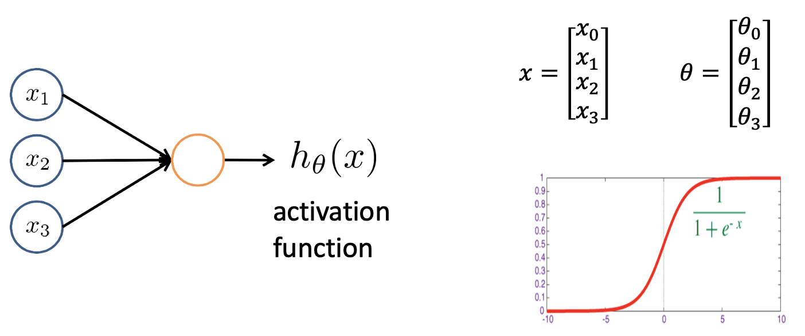
Neural Network Learning It's Own Features
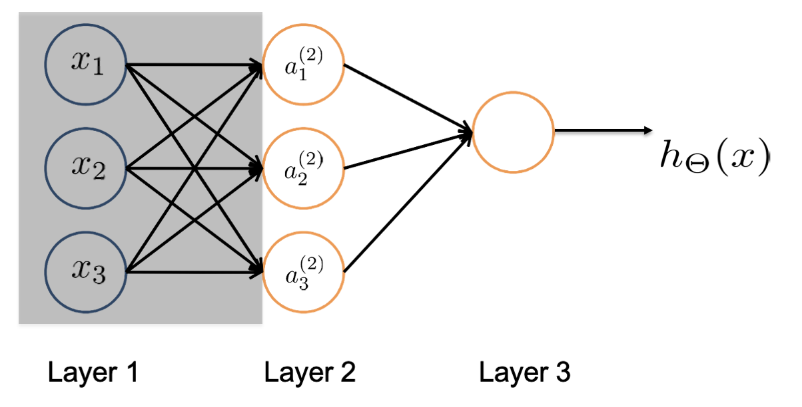
Deep Network Architecture
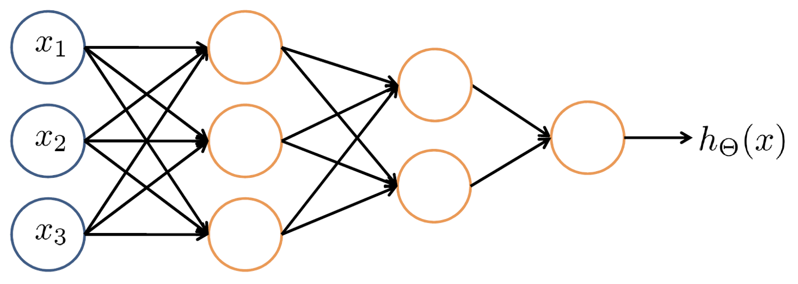
Potentially with many internal layers